Butična.Zelena.Raznolika.
Ustvarite si popoln jesenski dan. Po svoje. Dežela, kjer se srečajo alpski, panonski in mediteranski svet, vas čaka na vsakem koraku.
Majhna dežela.
Velike številke.
Spoj panonskega, alpskega in mediteranskega sveta se odraža v naravni, kulturni in gastronomski raznolikosti.
turistične regije, od Alp do morja
gastronomskih regij
vinorodne dežele
let raste najstarejša trta na svetu
pod zemljo leži najgloblja jedilnica
Štiri regije.
Ena dežela.
Izberite svet, ki vas kliče. Vsaka regija ima svoj ritem, svoje okuse in svoje poti.
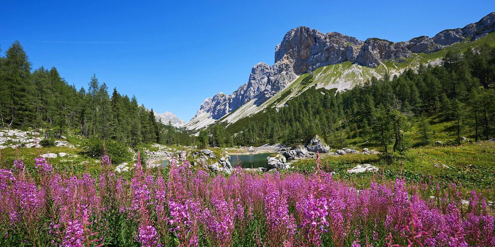
Alpska Slovenija
Top 5 doživetij regijeKraji, ki navdihujejo
Največji slovenski zakladi čakajo na vas. Na kakšen način boste začutili Slovenijo?
Bled z Blejskim jezerom
Svetovno znan biser ob robu Triglavskega narodnega parka.
46.3633° N · 14.0940° EDolina smaragdne Soče
Soča, reka tisočerih posebnosti.
46.3378° N · 13.5525° EPiran s solinami
45.5285° N · 13.5683° E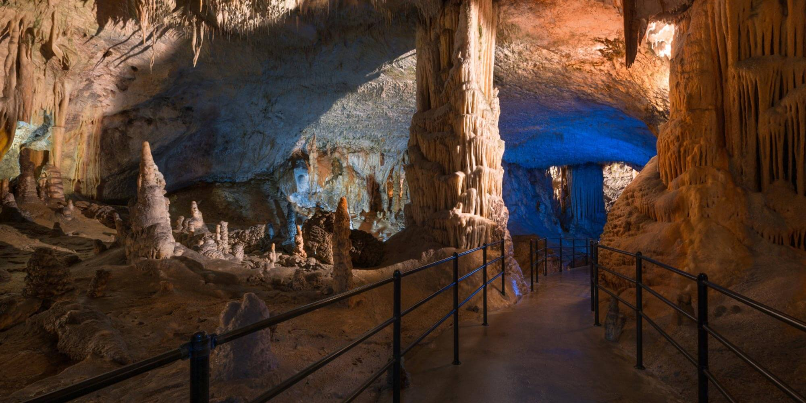
Postojnska jama
45.7826° N · 14.2036° E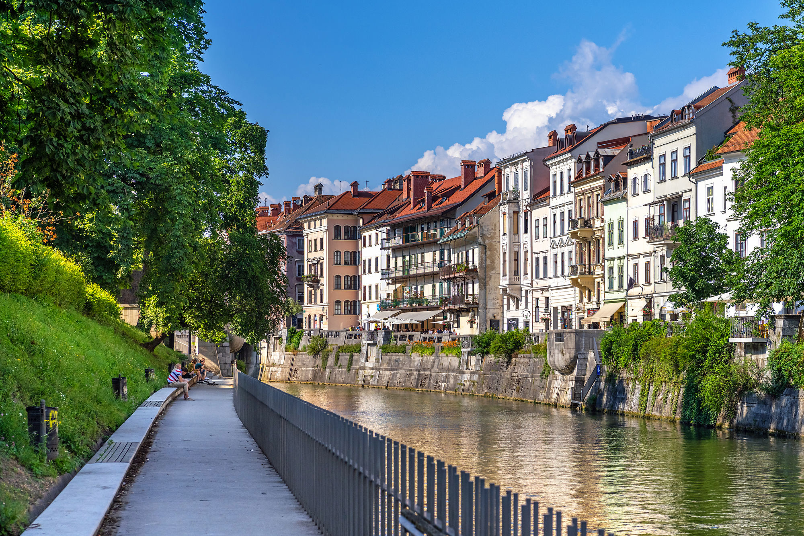
Ljubljana
Živahna. Živa. Šarm manjše prestolnice in samozavest velikih evropskih mest.
46.0511° N · 14.5051° E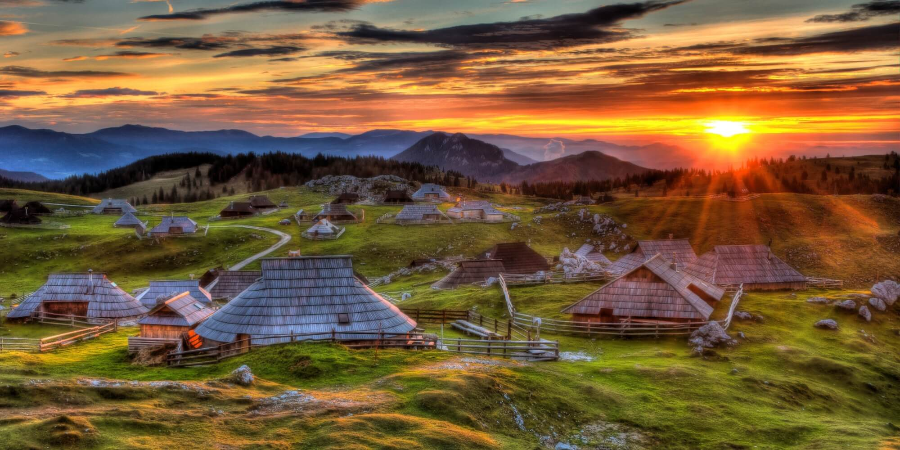
Velika planina
Največje pastirsko naselje v Evropi.
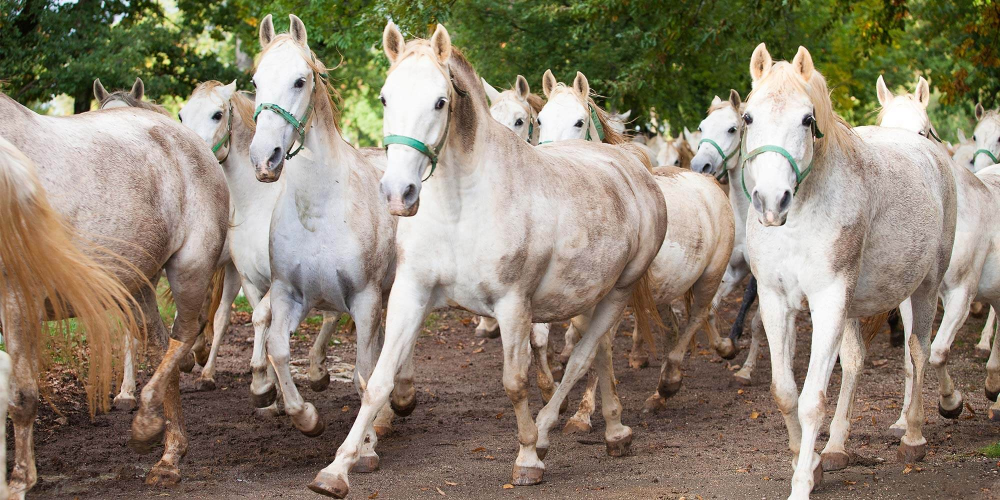
Lipica
Evropsko pomembna zibelka lipicancev.
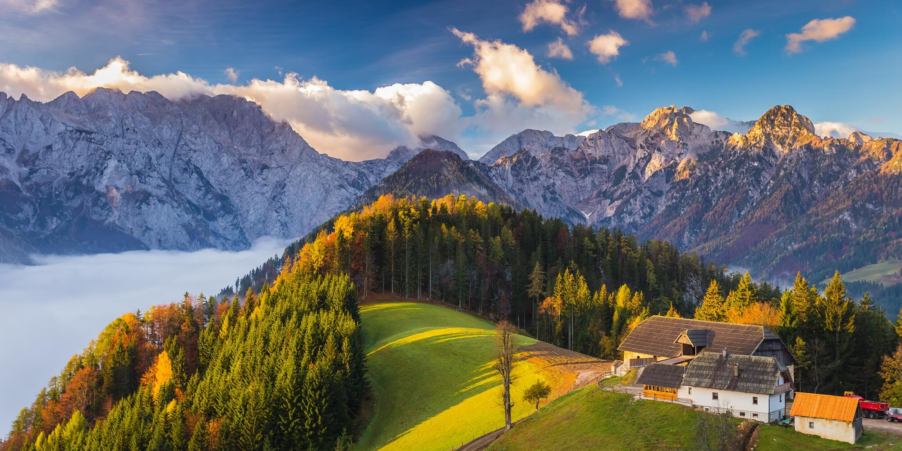
Logarska dolina
V zeleni dolini prisluhnite šumenju slapov.
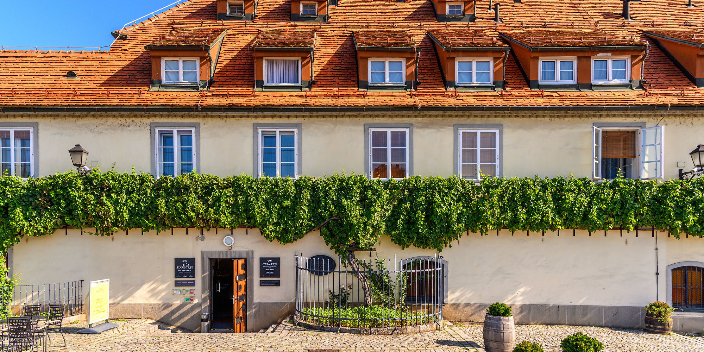
Najstarejša trta na svetu
Sredi Maribora raste že več kot 450 let.
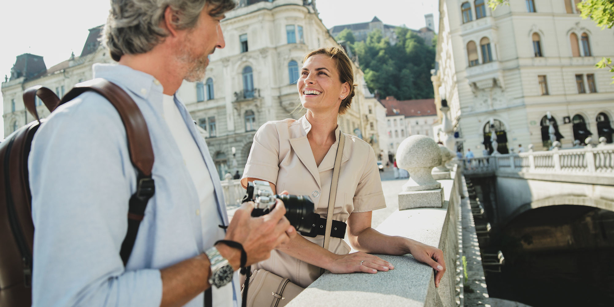
Svetovna dediščina UNESCO
Slovenske zakladnice svetovne dediščine.
Edinstvena doživetja Slovenije
Butična doživetja z zgodbo, ki jih ustvarjajo izjemni posamezniki. Dodajte jih v svoj načrt in sproti spremljajte proračun.
Kaj se dogaja
Prireditve, ki ta mesec dajejo Sloveniji poseben utrip.
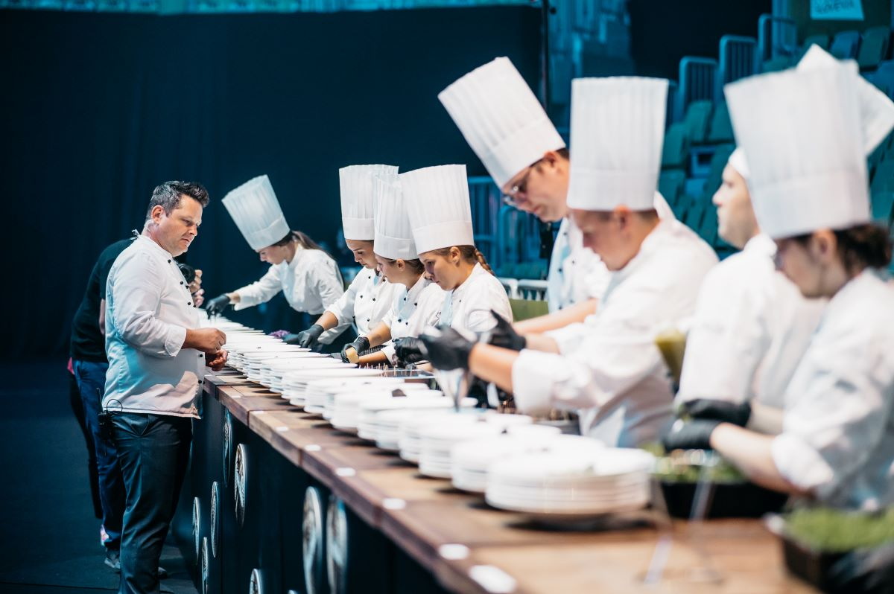
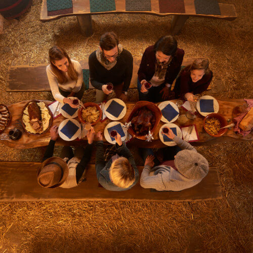
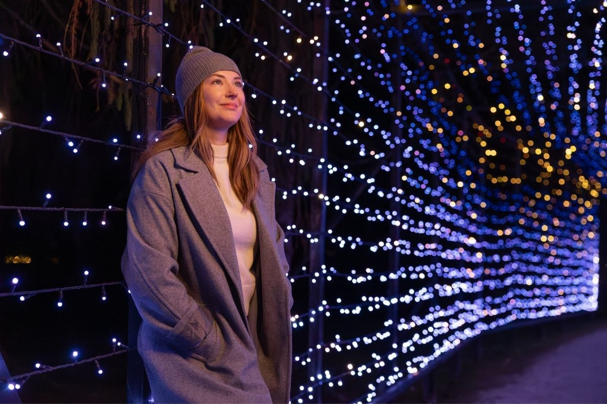
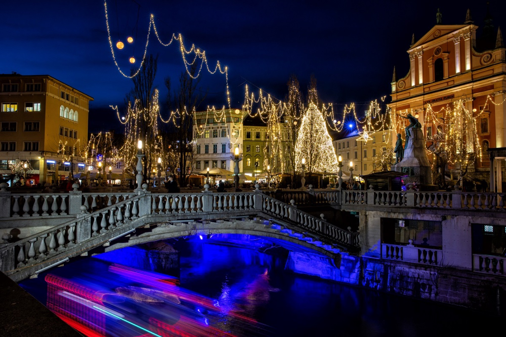
Zgodbe iz Slovenije
Poiščite navdih za vaše potovanje v zgodbah iz Slovenije.
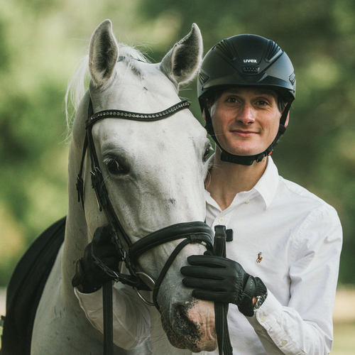
Domen Prevc v Lipici
Kaj povezuje enega najboljših smučarskih skakalcev na svetu z eno najbolj prepoznavnih evropskih pasem konj?
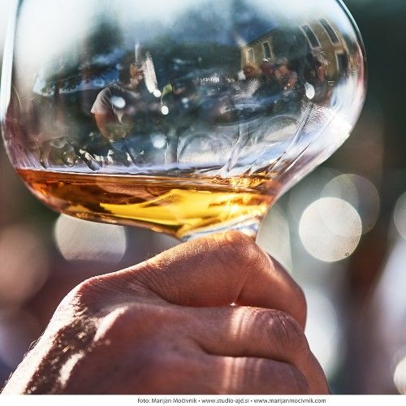
Martinovanje v Sloveniji: običaji in dogodki
Nazdravite mlademu vinu na martinovanjih po Sloveniji.
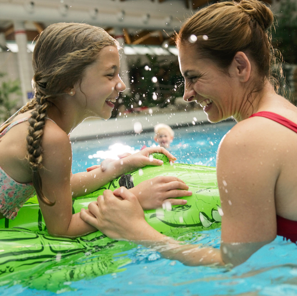
Najboljše jesenske družinske počitnice v termah
Top razlogi, zakaj so terme za družine zanimive tudi jeseni.
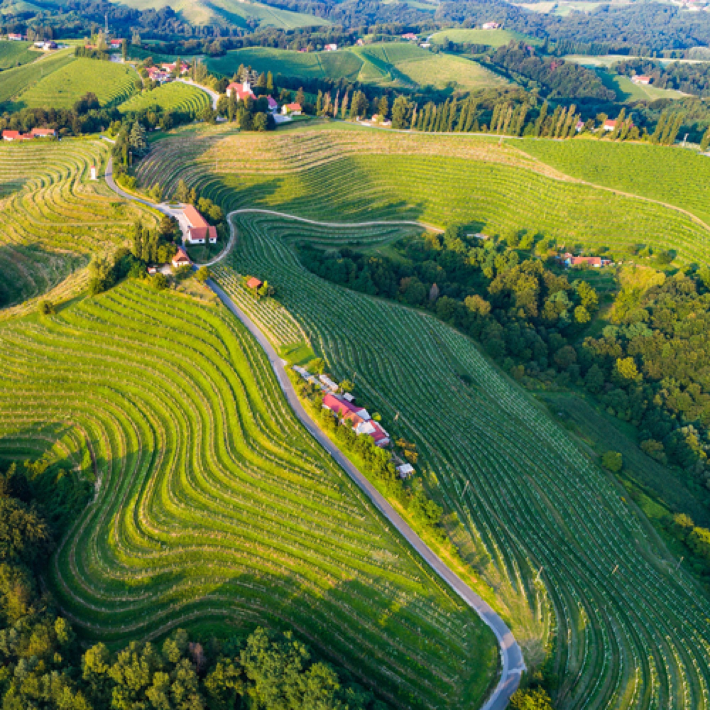
Jesenski kviz: Kako dobro poznate Slovenijo?
Sodelujte v kvizu in se potegujte za praktične nagrade.
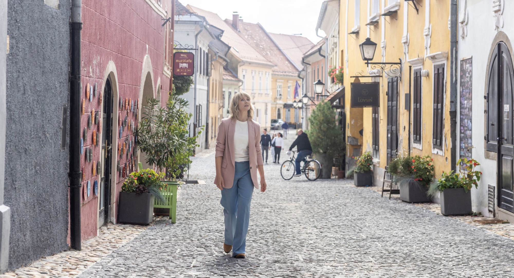
Mesta po meri ljudi
»Druga mesta morda ponujajo več, a Ptuj ponuja tisto, kar je bolj redko: občutek, da hodiš skozi živo zgodovino, ki te nikoli ne preplavi, ampak te povabi.«
Iva Krajnc Bagolaigralka, o mestu, v katerem je odraščala
Odkrijte človeško mero slovenskih mestVprašajte Almo.
Vaša sopotnica po Sloveniji.
Alma pozna kraje, doživetja in prireditve. Povejte ji, kaj vas veseli, in v nekaj sekundah dobite predlog za svoj dan.
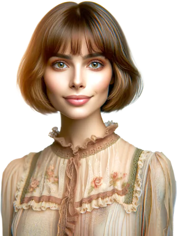
Vse za brezskrbno potovanje
Koristne informacije in varnostne smernice, zbrane na enem mestu.
Prihod v Slovenijo
V in po Sloveniji z avtom: ceste, vinjete in nasveti za varno vožnjo.
Preberite več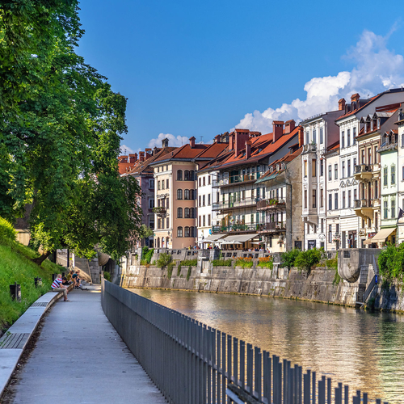
Slovenija za digitalne nomade
OdkrijteMejne formalnosti
Kaj potrebujete ob vstopu v državo.
Zdravstvo
Zdravniška pomoč in lekarne.
Dostopni turizem
Slovenija, odprta in prijazna destinacija.
S hišnim ljubljenčkom
Nasveti za potovanje s štirinožci.
Nastanitve
Od butičnih hotelov do kmetij.
Odpiralni časi
Trgovine, banke in ustanove.
Turistično informacijski centri
Lokalni nasveti na vsakem koraku.
Varnost
Številke za klic v sili in nasveti.
O Sloveniji pišejo
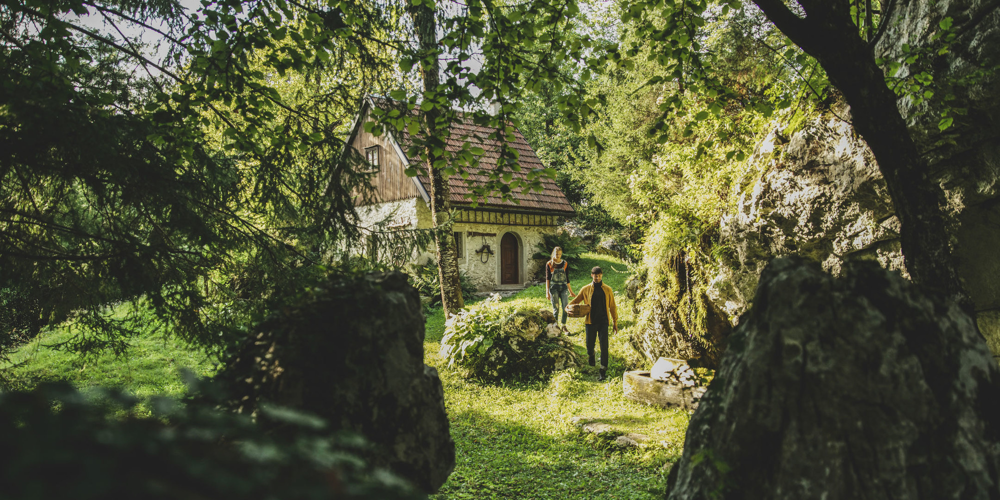